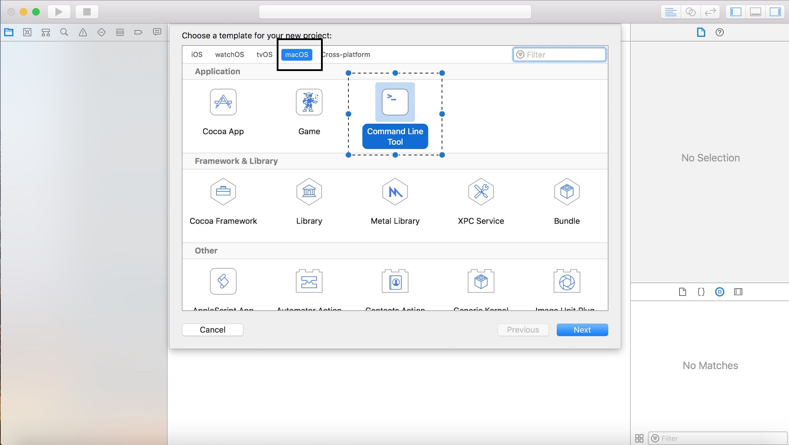
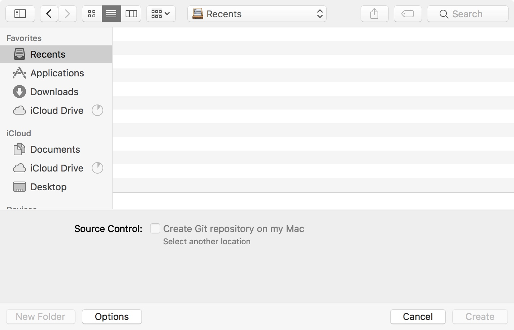
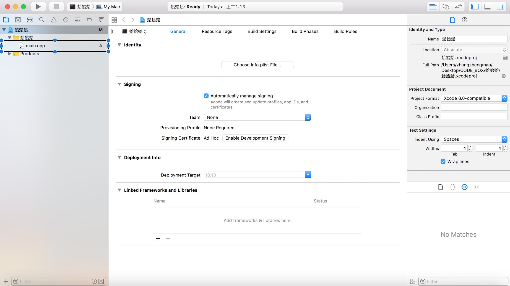

MaLker（beizhen_120@126.com）
建议人群: 大学（或同等水平）计算机专业新生,曾使用过部分古典Windows平台的开发工具（VC6.0）
一.提前准备(已经安装好的请跳过本部分)
下载与安装：
常见的下载方式:
安装过程中需要多次输入管理员密码：如果你开机时只能选择一个用户，那么这个用户的开机密码为管理员密码，如果有多个，那么根据安装界面提醒的用户名输入相应用户的开机密码即可。
方法一(墙裂建议):
作为一名拥有Mac（或者黑苹果）的你，你可能已经深受IOS的毒害许久，你或许已经拥有一部或者多不运行IOS的设备。
所以，你可以直接从App Store中直接下载。
在App Store中搜索Xcode，点击下载，然后点击安装，然后你就可以等待你的Xcode安装在你的电脑上了。(每次安装后均需要输入自己电脑的管理员账号，一般情况下为开机密码)
方法二:互联网下载
可能你或者你的朋友都一起买了Mac，或者你壕无人性的购买了苹果大礼包全家桶，你或许需要一个安装包来拯救你的带宽，这时候各大社区（某景论坛，某锋网等）都可以找到别人分享的安装包，一次下载之后就可以拷贝后在多个电脑上安装。
1.首先，你需要安装包.
2.双击安装包后多次输入管理员密码，就可以完成安装了。
方法三:Airdrop分享
这个的前提是你的另一台或者别人的Mac中已经有Xcode了，并且距离很近（Face2Face泥懂么）
1.首先需要在Finder中左侧辅助栏中打开Airdrop选项。
2.然后，在已经有Xcode的电脑中在Finder的侧栏中个人收藏->应用程序->Xcode右键选择通过Airdrop分享即可.
安装完成之后第一次打开Xcode会提醒输入管理员密码。
怎样用Xcode写一个helloWorld.cpp？
这个问题问的好
1.打开Xcode之后你会看到这个界面:

第一次打开时，右侧为空，右侧为你近期打开的工程(Project)
2.点击选择黑框所标出的选项后，你会进入以下界面

依次选择:MacOS->Comand Line Tool
3.然后你就进入了下图的界面

Product Name 为项目名为必填项其他为选填项
Language为编程语言，不用天真的去找简体中文了
4.填写完后点击Finish，然后选择文件存储路径，怎么存，我只能说看你自己了

5.进行完以上的操作以后相信你马上已经要懵逼了，你将会看到以下的界面

嗯，我相信，高中英语摸鱼的你已经方了，这是蛤，这玩意怎么那么高级，我该在哪写，桌子要是掀翻了，我的Mac会在多久后与地面发生亲密接触？
然鹅，对于初学者的你，只需要点击左侧标出的main.cpp,然后你就可以开始写代码了.
6.在你写完打码后点击左上角的开始号，右下角的Shell里就会出现你的运行结果了